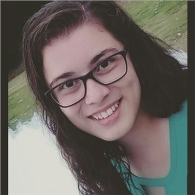
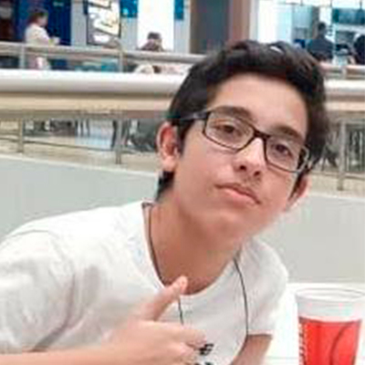
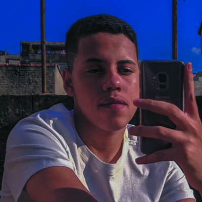
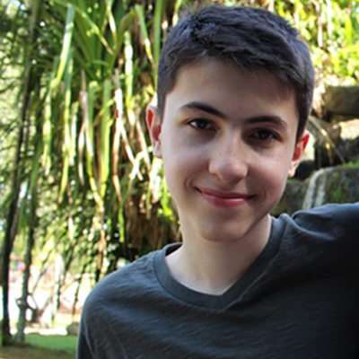
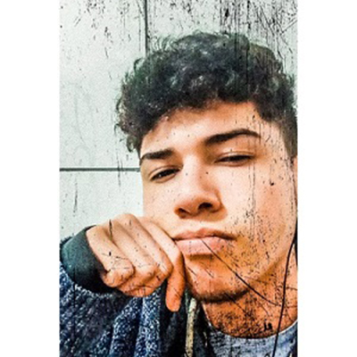

Sobre o Projeto
O projeto faz parte da Unidade Escolar ETEC Prof. Maria Cristina Medeiros, acontece no 1° ano do Ensino Médio – Integrado ao Técnico em Informática Para a Internet, período manhã. Desenvolvido de junho a julho de 2020. O objetivo é unir diferentes componentes já citados anteriormente de forma diversificada, já se preparando para o vestibular. O intuito é, além de tudo, trabalhar algumas competências socioemocionais como:
- Exercitar a curiosidade e criatividade;
- Aprender a trabalhar em equipe;
- Desenvolver a responsabilidade das entregas semanais do projeto para não prejudicar o grupo do trabalho.
“O verdadeiro perigo não são os computadores começarem a pensar como homens, mas os homens começarem a pensar como computadores.” -Autor Desconhecido-
Revista
Veja algumas de nossas matérias
Um Pouco Sobre o Trovadorismo
O Trovadorismo foi a primeira escola literária e surgiu no século XII na região da Povença no sul da França, durante a ...
O trovadorismo no dias atuais
Ao longo das eras várias coisas mudam, evoluem, surgem e se perdem e o trovadorismo não é uma exceção a ...
Prosa medieval
Crônicas na época do trovadorismo eram conhecidas como Cronicões e estavam localizadas na “Prosa Medieval”...
Trovadorismo no vestibular
O trovadorismo é um tema recorrente em vestibulares, e que muitas vezes acabam pegando de surpresa os candidatos ...
Uruguai
Um dos países da América Latina que fala espanhol
La mano
Parada 1 da Playa Brava
La mano (conhecido como Monumento ao afogado em português), tambem denominada por Los Dedos, Monumento ao Afogado ou Mano de Punta del Este, foi criado em 1982 pelo artista plástico chileno Mario Irarrázabal, durante um concurso que ocorrera em mesma época. Constituida de plástico, ferro e aço, a escultura tem como objetivo alertar os visitantes que visitam a praia sobre o perigo de afogamento devido às fortes ondas do mar. Sendo atualmente o monumento mais famoso da Punta del Este (e por possuir livre acesso), mtornou-se um dos lugares mais procurados pelos turistas.
Parrillada
Comida Típica
Também chamada de parrilla ou asado é o nosso famoso churras (churrasco), (parrilha em português significa grelha, que também é usado para designar churrasco no país). O diferencial desse prato é que ele é feito a partir de carnes de boa qualidade com cortes únicos. Entre as carnes usadas temas miúdos de boi, além de linguiça e frango quem são servidas com acompanhamentos como batatas ou salada. Famoso pelos seus restaurantes que servem pratos típicos do país, o Mercado del Puerto é o melhor lugar para experimentar a parrillada uruguaia.
El Cuarteto de Nos
Grupo Musica
Estando na ativa desde 1980, com seu primeiro disco lançado em 1984 e atualmente com 24 álbuns, é considerada uma das banda mais famosas do rock uruguaiano. São reconhecidos internacionalmentes pelas suas canções que abordam "fatos do cotidiano de forma crítica e bem-humorada". E o que mais chama atenção de seus ouvintes é a forma com que a banda usa e abusa dos generos músicais, a qual mistura principalmente rock alternativo, pop, rap e eletrônica.
Galeria
Algumas fotos do resultado do projeto
{kind=link}
{kind=link}
{kind=link}
{kind=link}
{kind=link}
{kind=link}
{kind=link}
{kind=link}
Equipe
Alunos que desenvolveram o projeto
Atualmente estudante de curso técnico integrado ao ensino médio de Informatica para Internet na Etec Maria Cristina Medeiros, aprendendo desenvolvimento de sites, banco de dados, e algoritmos, juntamente com arte digital. Minha área de dominancia é o web design com o foco nos designs minimalistas e clean.
Larissa Nunes de Figueredo
Estudante
1c
Estudante da ETEC Prof. Maria Cristina Medeiros,Tenho 14 anos e atualmente Estou cursando o 1°Ano do Ensino Médio com Habilitação Profissional de Técnico em Informática.
José Vitor Rodrigues Cavalcanti
Estudante
1c
Meu nome é Kaio, tenho 16 anos e moro na cidade de Mauá Sp. Atualmente estudo na Etec Professora Maria Cristina de Medeiros onde faço o curso informática para internet. Jogo Basquete desde 2016 e Faço curso de Inglês desde 2014.
Kaio Mesquita da Silva
Estudante
1c
Meu nome é Mateus Moretti, nasci em 2005. Moro em Ribeirão Pires e atualmente estudo na Etec Professora Maria Cristina de Medeiros onde faço o curso Informática para Internet. Estou em fase de conclusão do curso de matemática do Kumon e tenho inglês avançado.
Mateus Moretti Ruiz
Estudante
1c
Olá, prazer! Me chamo Lucas Alves Lago, tenho 15 anos e sou aluno do 1º ano do ensino médio com habilitação técnica em Informática para a Internet na ETEC Prof. Maria Cristina Medeiros. Desde que me entendo por gente, a tecnologia sempre me despertou muito interesse, portanto me esforço dia após dia, para que no futuro me torne um bom profissional neste campo e possa contribuir para/com um bom desenvolvimento tecnológico no mesmo.
Lucas Alves Lago
Estudante
1c
Orientadores
Professores que orientaram o projeto
Geni Conceição Zottola Benedito
Professora de ArtesCintia Maria de Araujo Pinho
Professora de Interface Web
Bárbara Tomazia Alexandre do Nascimento
Professora de PortuguêsContato
Entre em contato com a equipe